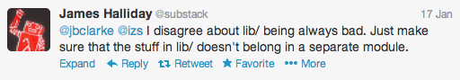
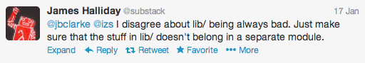

## Rule of Modularity
Write simple parts connected by clean interfaces.
## Rule of Parsimony
Write a big program only when it is clear **by demonstration** that nothing else will do.
## Correctness and Collaboration
When you can't reason correctly about the guts of a program, you can't be sure it's correct and you can't fix it if it's broken.
## Prototyping
Prototype then polish.
Get it working before you optimize it.
## Summary
The **only** way to write complex software that won't fall on its face is build it out of simple modules connected by
well-defined interfaces, so that most problems are local and you have some hope of fixing or optimizing a part without
breaking the whole.
 
